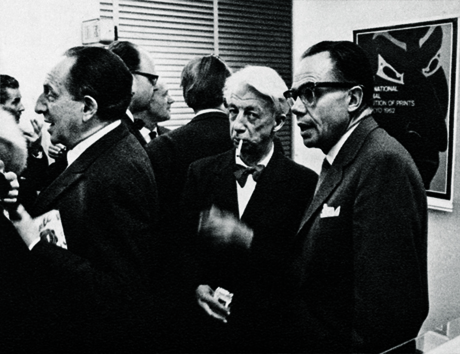
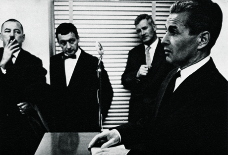
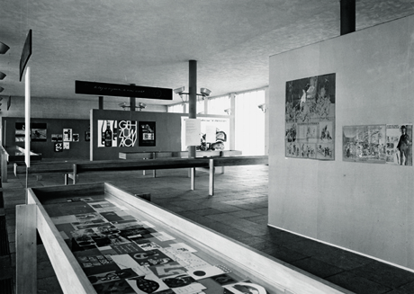
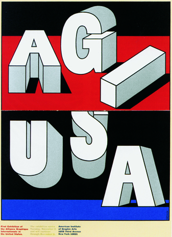
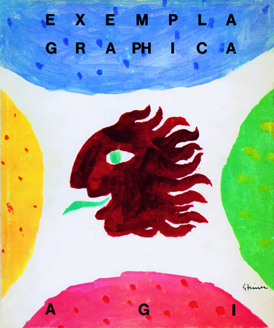

1960s : It's About Communication!
The Alliance had also established its ‘way of life’: an annual congress, somewhere in one of the ‘member states’ and regular exhibitions in major cities, in museums of high standing.The congresses were on the theme of justifying the role and significance of visual communication. The discussions were primarily about philosophy, responsibility and ethics. Initially, an air of ‘advertising’ still clung to the profession: my own evening course (1956–61) at the Applied Art College, later the Rietveld Academy, in Amsterdam, was entitled ‘Advertising Design’. In practice, the assignments set by lecturers such as Wim Crouwel and Peter Doebele had hardly anything to do with it; they were more about graphic design.
What Is A.G.I?
Inwards
The AGI unites the world's leading graphics designers and artists in a professional club of common interest and achievement. It is an élite club. Its members have been collectively responsible for the identity design of most of the world's top corporations and institutions as well as for countless examples of globally known packaging, publications, illustration and posters. The AGI provides for friendship, mutual respect and the enjoyment of the company of the like-minded - even reassurance in the face of a sceptical world. Ideas and experiences are exchanged informally at periodic meetings and by letter, email and fax. All members may also attend the AGI Congress, which involves a more formal business and social agenda. A different country hosts the Congress each year and presents its own history, members' work and professional achievements in art, commerce and education.
Outwards
The role and importance of the AGI within the professional field of graphic design is clearly different from the existing national and international professional organisations. In recognition of this context, the AGI is also a platform for activity. It has a task to tell the world and change it. Through the relationships and interaction of its members, the AGI promotes graphic design in lectures, education and publishing. It encourages knowledge and understanding among the young and fosters contacts with other institutions, organisations and companies involved in graphic design.
The AGI holds exhibitions of members work which are highly influential in disseminating new forms, techniques and ideas. There is a book publishing programme based on the thoughts and works of members. There are contacts with colleges and schools, government bodies and commercial institutes, all aimed at promoting graphic design and visual literacy.
Backwards
In the 1940s, commercial artists, mural makers, typographers, printmakers, art directors, illustrators and poster designers increasingly realised their common bonds, and the modern profession of graphic design began to be defined. In 1951, five graphic artists - two Swiss and three French - decided to formalise their relationship into some sort of association. Their idea was simply to share common interests and friendships across national and cultural borders.
It was a notion that soon attracted leading exponents of the graphic arts from elsewhere in Europe and in the USA. In 1952 the Alliance Graphique Internationale was incorporated in Paris with 65 members from 10 countries. The first AGI exhibition was held in Paris in 1955 and in 1969 the headquarters moved from Paris to Zurich. Student seminars were introduced in 1979 and the first Young Professional AGI Congress was held in London in 1994.
Forwards
An explosion of global communications is changing the world. Powered by media like television and the internet, a common visual language is forming as symbols and images become the world's universal vernacular. The original members of the AGI were responsible for creating many elements of this new language. As the world turns, their successors - exponents of the traditional and the new media - are becoming members of the AGI themselves. Today there are around 370 from Africa, America, Australia, Asia, the Middle East and Europe - 32 countries in all.
Membership of the AGI requires reputation and achievement of the highest order and commitment to the processes of visual learning and perception, unfettered by cultural differences. The AGI remains dedicated to the universal aspect of graphic design as a means of communication and information, and its ideals remain relevant to the new world of visual literacy which its members have helped to bring about.
1962 : Amsterdam
×

1962: AGI congress and exhibition in Amsterdam, The Netherlands.Hilversum, Steendrukkerij De Jong & Co. Pieter Brattinga staged an exhibition of Japanese children’s toys in the canteen of this printer’s firm. Hans Schleger, Will Sandberg and Walter Herdeg.
It was therefore entrusted to Will Burtin to explain the role of the ‘Advertising Artist in the Creation of a Corporate Image’. He declared that he was only able to sustain such a broad, long-term commission with any pleasure because, during the task, a bond of friendship evolved, based on mutual respect, understanding and support, a valuable relationship at the highest level of the company. He talked about working with Upjohn’s Executive Vice-President.Henrion said: ‘Visual communication is the designer’s new catchphrase, with particular reference to all the media of mass communications. The designer’s function is seen more as that of an intermediary, a conveyor of information, who should, in a very professional and competent way, pass information on to the receiving masses.’
George Him: ‘...our efforts to satisfy the needs of our clients may often produce new and unexpected solutions that no armies of experts around conference tables are ever likely to achieve.’
Jacques Richez spoke of the social function of the designer. He was to return to that theme in the decades that followed. He posed the question of whether the designer should do any old client’s dirty work: ‘The creative artist, when on the point of becoming the mouthpiece of some line of propaganda, cannot in my opinion avoid asking himself what will be the implications of his work and trying to foresee its ultimate psychological consequences. Einstein is said to have admitted, with reference to the methods of psychological warfare, that they frightened him more than the nuclear weapons.’
<
>
1964 : Alpbach
×

The travelling exhibition of 1964 (Hamburg, Stuttgart) primarily demonstrated the further diversification of the designers’ output. Logos, typography, book jackets, films, TV graphics and work for scientific research received more attention than ever before. That year’s congress was held in Alpbach, in the Austrian countryside, to which AGI was to return in 1989. Germano Facetti, a book designer who felt compelled to create a visible form for the invisible concept of poetry, observed the change in the designer’s task: ‘Where, in the past, our role usually entailed convincing and suggesting, winning sympathy, it is now about visually expressing facts and making them as comprehensible as possible.’ Will Burtin had this to say: ‘As the complexity of ideas grows and specialized activities increase further, this design function becomes more and more important, especially if one considers also the relatively new factor of a drastically enlarged range of the new communication media which advancing technology has made possible.’
<
>
1965
×

AGI was, in other words, fast becoming more than a club of poster designers. Jacques Richez: ‘We must affirm and repeat continually that the graphic designer is not merely the one who is commissioned to translate into signs, forms and colours a message that is basically foreign to him, but that his value depends just as much on his ability to partake mentally in the enterprise, to understand the problems and to find an adequate solution to them.
The highlight of this meeting in Alpbach, however, was the appearance of guest speaker Arthur Koestler. In his speech ‘Act of Creation’ he said: ‘In science as in art, creation manifests itself visually... We have to get away from the idea that science is guided by logic, art by inspiration. They are two ends of a continuous spectrum, a kind of rainbow spectrum with no sharp boundaries in between.’
<
>
1966 : USA
×

1966: First AGI congress in the USA. Logo by Milton Glaser.
By 1966 AGI had matured so much that it was able to cross the Atlantic: that year New York was the venue for the congress and for two exhibitions, one at the AIGA and the other in the new Lincoln Art Center. Milton Glaser designed the publicity planned by Walter Allner; George Tscherny, Will Burtin and his wife Cipe Pineles designed the shows. Henrion pleaded in favour of attracting younger members, a plea that would again become topical in the early 1990s. At the same time, however, a proposal had been tabled suggesting that the national presidents should nominate their own members and that membership should be restricted to five or six per country! Discussions, on the other hand, were mainly about finding and retaining members of the highest quality. The acceptance requirement of ‘how well known is the candidate?’ was discussed. Tscherny commented that ‘fame and reputation’ are not easily measured. By this time, AGI was sporadically publishing a Bulletin. Issue 3 in 1967 included the first obituary. The Swede Anders Beckman had died and his stormy, colourful life was depicted with verve.
In the same year, the book Exempla Graphica appeared as the first prestigious AGI presentation, a kind of manifesto. Heiri Steiner was responsible for its conception and production. 78 AGI members were given a double spread. In the afterword, Henrion remarked (after five years as chairman): ‘Each professional association and especially a self-selected elite, as we are sometimes called, must be concerned with education. My personal opinion is that today too much time is spent on nurturing talent and not enough on developing an intellectual, analytical approach.’
<
>
1967 : Nice
×

1967: Exempla Graphica, AGI. Heiri Steiner designed this wonderful book, showcasing the histories of 78 AGI members.
In 1967, AGI met in Nice. Germano Facetti, recently admitted as an AGI member, immediately became the new international president. The term lightning career is certainly applicable here! The renowned Galerie Maeght in St Paul de Vence was the main attraction of this meeting, of which the annals make little further mention. Facetti is, in any case, featured in many of the photographs of the event.
The following year, Rigi in Switzerland was the venue. It was decided not to invite any speakers, but to examine the changes in the profession in a round table discussion. Heiri Steiner instigated the theme: ‘What does design mean today? What does the profession mean to everyone personally and to the world in general?’ One of the responses was that, although the designer has little influence on society, society strongly influences the designer, particularly as economics had surpassed the significance of religion. People were modelling themselves on the ever-changing fashion image the mass media rapidly helped permeate everywhere, which was accepted – often, to be rejected just as quickly but always with the chance of making a comeback. Serious design is not about incidental style, nor personal expression, but high-quality information transfer. AGI concluded its second decade in London. The content of the meeting was again largely determined by a major philosophical speech from the Belgian, Jacques Richez, ‘AGI’s conscience’. In his statement, Jacques invoked both the here-and-now and the future, right up to the 21st century. He harked back to George Him’s reaction during their conversation on the flanks of the Rigi Mountain. Him: ‘Our duty is to bring order and beauty into a world which would be dull and empty without our participation. We should fulfil this task to the best of our ability: this is the justification of our existence and the reason for our professional pride.’ Cassandre had once preached a credo: ‘The duty of a designer is to deliver a message as clearly and as swiftly as possible. His own personal opinion is of no concern.’ Richez, however, considered those words outdated: ‘Competition is setting the tone in society and rages the most wildly in those countries with the highest material standards. As designers, we should be aware of the results and consequences of our activities at a social level.’These words preceded the presentation of the Unesco figures, which Jacques quoted, reflecting the expected rapid growth of the world population, the increase in university education and the role of the intellectual elite of the coming 21st century, the future ‘boosters of further intensification of competitive relationships’. He foresaw an explosive market for systematically produced ‘goodies’ aimed at accommodating the wishes and driving forces of a living climate strongly determined by those young people: ‘production in order to produce’ and ‘consumption for its own sake’.
<